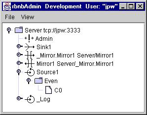
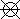
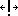
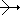
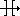
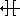
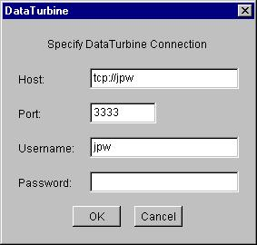
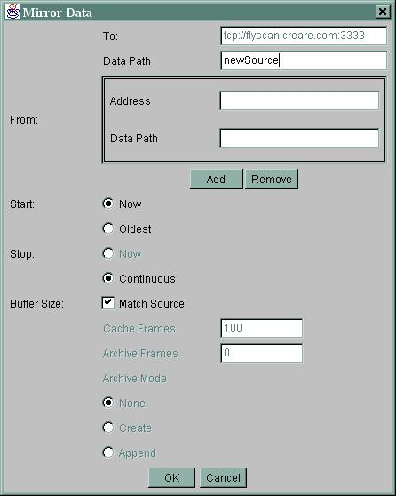
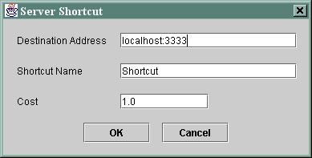

DataTurbine Administrator
rbnbAdmin
User Manual
V2.4
March 8, 2002
Copyright, Creare Inc.
Table Of Contents
Overview
Setup and Startup
DataTurbine
Control Connection
Data Sink
Data Source
Mirror (To)
Mirror (From)
File
View
Mirror from...
Mirror to...
Terminate...
Mirror Dialog
Introduction
Overview
rbnbAdmin is a Java application which connects to a DataTurbine,
displays a "tree view" of its current connections, and allows the user
to perform certain administrative functions. The following figure
illustrates a sample rbnbAdmin user interface window:

Each object in the tree view has a representative icon. These
are shown and discussed in the section which follows.
In addition to displaying the connected hierarchy of objects, rbnbAdmin
provides a variety of administrative control capabilities, which are
described
in following sections. These include:
Setup and Startup
rbnbAdmin needs to be run under a Java Virtual Machine (JVM). rbnbAdmin
has two optional command-line arguments which specify the server to
connect
to. The format of the command line looks like the following:
java -jar admin.jar -n <Server name> -a
<host>:<port> -u <user ID>
If you start without the "-n", "-a", and "-u" arguments, use the
File/Open
selection to initiate a connection.
Tree View Information
The main panel of the rbnbAdmin window shows a hierarchical
tree-view
of the DataTurbine. The root node of the tree view (the node at
the
top) is the DataTurbine to which rbnbAdmin is connected.
Below
that, other connections of various types are shown, as described below.
 DataTurbine
The root-level DataTurbine (i.e. the one to which you have connected)
is
shown as the top line of the tree-view display. The contents of
this
Server's registration map is added as a series of child nodes in the
tree
structure.
The name shown for a DataTurbine object is of the form "<name>
<address>", where
name identifies the DataTurbine and address
describes how to connect to this DataTurbine.
 Control
Connection
Control connections exist for administrative functions. You
should
always be able to see the control connection created by rbnbAdmin
itself. Control connections associated with source and sink
connections
are not explicitly shown. In RBNB object parlance, a control
connection
corresponds to an RCO (Ring buffer Control Object).
The name shown for a control connection is the name provided by the
control application to the DataTurbine. For rbnbAdmin,
this
name is hardwired to "Admin". If this name is not unique in the
DataTurbine,
an underscore and unique identifier number will be appended to the name
(for example, "Admin_3").
 Data
Sink
A data sink connection exists for each connected application open for
"reading".
Data flows from the DataTurbine to data sink applications. In
RBNB
parlance, a sink connection corresponds to an NBO (Network Bus
Object).
The contents of this Sink's registration map are added as children to
this
Sink's node in the tree structure.
The name shown for a sink connection is the name provided by the
sink
application to the DataTurbine. If this name is not unique in the
DataTurbine, an underscore and unique identifier number will be
appended
to the name.
 Data
Source
Data
Source
A data source connection exists for each application which is "writing"
data to the DataTurbine. Data flows from a source application to
the DataTurbine. In RBNB parlance, a source connection
corresponds
to an RBO (Ring Buffer Object). The contents of this Source's
registration
map are added as children to this Source's node in the tree structure.
It is also possible to have an data source (RBO) object for a data
source
which has disconnected (leaving data in the RBO), or for an archive
which
was loaded.
The name shown for a source connection is the name provided by the
source
application to the DataTurbine. If this name is not unique in the
DataTurbine, an underscore and unique identifier number will be
appended
to the name.
 Mirror
(To)
A data Mirror (To) object is associated with a data mirror which
streams
data from a Source in the local DataTurbine to a new RBO in either the
local or a remote DataTurbine. It may have been established by a
connected application, or by rbnbAdmin itself (see below).
 Mirror
(From)
A data Mirror (From) object is associated with a data mirror which
streams
data from a Source located in either the local or a remote DataTurbine
to an RBO in the local DataTurbine. It may have been established
by an application or by rbnbAdmin itself (see below).
Menu Bar
rbnbAdmin has the following pull-down menus.
File
The File pull-down menu provides the following selections.
| Open... |
Open a connection between rbnbAdmin and a
DataTurbine.
Provide the host (name or IP address) and port number of the
DataTurbine
to which you would like to connect as well as your username and
password.
An example of the connection dialog is shown below. |
| Close |
Close the current connection between rbnbAdmin and
the DataTurbine. |
| Exit |
Exit the rbnbAdmin program. |

Dialog used to connect to a DataTurbine.
View
The Refresh (F5) selection causes rbnbAdmin to obtain
and
display an updated registration map from the DataTurbine. The Hidden
check box will hide administrative objects (those starting with
underscore
"_").
Pop-Up Menus
Several objects in the tree view provide a pop-up menu accessed by
right-clicking
the mouse over the object. The following selections are
available:
|
Item
|
Applicable Objects
|
Description
|
| Mirror from... |
DataTurbine
(top level) |
Available from the top level DataTurbine's Pop-Up menu (the
DataTurbine
to which the user is connected). This menu item establishes a
"Pull"
mirror, which requests a Source in the local or a remote DataTurbine to
mirror itself to a new RBO in the local DataTurbine. See Mirror
Dialog below. |
| Mirror to... |
Source
(local) |
Mirrors data from the selected local Source to a new RBO in
either
the local or a remote DataTurbine. This establishes a "Push"
mirror.
See Mirror Dialog below. |
| Terminate... |
Control
DataTurbine
(top level)
Mirror (From)
Mirror (To)
Sink
Source (local) |
Close associated object. |
Mirror Dialog
Mirrors cause data from a designated source (RBO) to be
automatically
sent to a different RBO in either the local or a remote
DataTurbine.
Thus, a copy of the selected source data is available at both the
original
source and the destination RBO. Mirrors differ from routing in
that
data is automatically sent without waiting for a sink request. The
mirror
is established in one of two ways:
-
"Pull" mirror: A request is made to one or more Sources (located in
either
the local or a remote DataTurbine) to establish a mirror with the local
DataTurbine. In rbnbAdmin this can be done by selecting
the
"Mirror from..." Pop-Up menu item on the top level DataTurbine.
Selecting
this menu item pops up a dialog in which the user can enter multiple
Sources
from which to mirror data (see dialog below).
-
"Push" mirror: A mirror is established between a local Source and a new
RBO located in either the local or a remote DataTurbine. In rbnbAdmin
this can be done by selecting "Mirror to..." on a local Source's Pop-Up
menu.
A sample "Mirror Data" dialog is shown below. This dialog was
obtained
by selecting the "Mirror from..." Pop-Up menu item on the top level
DataTurbine
(which allows the entry of multiple "From" Sources).

A description of the dialog items follows:
-
"To" description: This defines the new RBO that will receive the
mirrored data. Specify the "Name" and "Address"
required
to connect to the DataTurbine and the "Data Path" of the new
RBO.
For a "Pull" mirror, the "Name" and "Address" text fields
are filled in and desensitized (non-editable) since the target
DataTurbine
in this case is always the local DataTurbine.
-
"From" description: This defines the Source(s) from which data
will
be mirrored. Specify the "Name" and "Address"
required
to connect to the DataTurbine and the "Data Path" to the
existing
Source. When establishing a "Push" mirror from a local Source the
"Name", "Address" and "Data Path" text fields are
filled in and desensitized (non-editable) since these fields are
specified
by the user's selection. Selecting the "Mirror from..." Pop-Up
menu
item on the top level DataTurbine yields the dialog shown above, which
allows the entry of multiple "From" Sources. In this case, each
Source
is specified by its "Name", "Address" and "Data Path"
text fields. Source "Name", "Address" and "Data
Path" fields are added and removed using the provided Add
and
Remove
buttons. If there are multiple "From" Sources then multiple
mirrors
will be created with Data Paths of the form <specified "To" Data
Path>.<index>
(for example, for the dialog shown above, the Data Paths of the mirrors
created will be "newSource.1", "newSource.2", "newSource.3", etc.).
-
"Start" time: Specify the earliest data to mirror. Choices
are:
-
Now: start mirroring data from this point in time,
-
Oldest: mirror starting from the oldest available data.
-
"Stop" time: Specify when to stop mirroring data. Choices
are:
-
Now: stop mirroring data at this point in time (this
option is not
currently available),
-
Continuous: continuously mirror data (no designated stop
time).
-
"Buffer Size": Specify the number of Cache Frames, Archive
Frames,
and Archive Mode in the new source. Automatically match
the
"From" Source's cache size, archive size, and archive mode by selecting
the "Match Source" checkbox.
Note: If the "To" server matches the "From" server (i.e. their
address
and name matches), the new RBO is created on the same DataTurbine as
the
existing Source. In this case, the "To" data path must not be the
same as the "From" data path (that is, a DataTurbine cannot have two
identically
named RBOs).
Routing
RBNB Servers can be routed in one of two ways:
-
Parent/Child Routing
-
Routing Shortcuts
The former is a hierarchical routing in which RBNB servers are
connected
via a strict topology. The fully qualified name of any server is
its full-path, as in:
/grandparent/parent/child
The parent of a server is specified at the time an RBNB server is
launched
(via a rbnbServer startup flag). Shortcuts can be started
at run time via rbnbAdmin, using the pop-up Start
shortcut...
option by right clicking the connected RBNB server icon (i.e.the server
to which rbnbAdmin has an open connection). The following
figure shows the shortcut pop up configuration menu.

Sources and channels on a routed shortcut are addressed via the
Shortcut
Name. For example:
/MyServer/ShortcutName/remoteSource/chan1
The Cost associated with a shortcut is used to select the best
path
to fetch data when there is more than one way available (e.g. when
there
are parent/child routes and shortcut routes both available to the
target
server).
To see the sources and channels in a routed RBNB server, you may
need
to click the Refresh option from the right-click popup menu on
that
server.